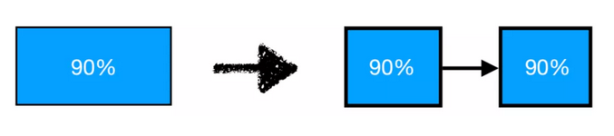
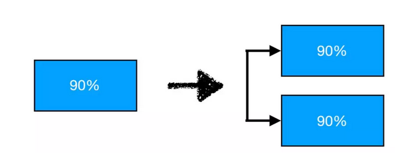

架构拆分的代价之一二三¶
架构拆分可以用来节省人们执行事务生命周期活动所需的时间，这就是传说中购买“寸光阴”的方式，也是传说中的“银弹”。不过要获得这个“银弹”，也不是没有代价的。但既然节省的是时间，而时间又是无价的，因此人们也愿意采用架构拆分，哪怕要因此而付出巨大的代价。因为相比“无价”而言，“巨大的代价”也是可以接受的。 可是架构也不是万能的。那么在采用架构拆分之前，了解这些“巨大的代价” 是非常有必要的，可以帮助我们认清架构的局限，厘清对作架构拆分的人的要求。因为不合理的架构拆分，反而会浪费更多的时间；哪怕是合理的架构拆分， 但是如果不能够重新组装回原有生命周期的话，也无法达到节省时间的目的， 最终也会导致浪费时间。 没有上下文的同学看到这里，可能会对“架构”和“架构拆分”这两个词有迷惑。一会儿说“架构”，一会儿说“架构拆分”，那么架构和架构拆分究竟是什么关系呢？架构拆分是实现架构的一个手段，是架构落地的方法，是架构的核心生命周期活动。 本文尝试描述架构拆分所产生的代价。观点不一定正确，也不一定适合所有人，仅供参考。如能引发读者的哪怕一丝思考，那就幸甚至哉!
空间拆分的代价¶
架构拆分的本质就是空间拆分，这在之前的文章中已经探讨过了。一个事物在进行空间拆分之后，必然会变成一个一个不同的个体。每个个体从原有事物中独立出来之后，会形成各自一个一个的独立生命周期。 既然是独立生命周期，那么就意味着对原有事物做架构拆分的人 ---- 也就是 架构拆分主体，他必须要管理这些新出现的一个一个独立生命周期。也可以看到，有了架构才会出现管理，做管理的人不懂架构是不行的。 但是大部分做架构拆分的人，都没有意识到这一点。大多数人只注意获得架构拆分的好处，而忽略了拆分出来的子生命周期也是需要管理的，只有管理好子生命周期才能够得到架构拆分的好处。 比如做技术的人，在企业经过一段时间的锻炼之后，掌握了某种技术。往往他们就会开始去思考如何把技术变现，以求自身利益最大化。比较流行的方式当然就是去创业。 而创业则等于形成一种新的社会分工，也就是对社会的一个架构拆分。拆分的结果，形成了一个新的公司，也就形成了一个新的生命周期。这个新的生命周期必须先要健康的运转起来，技术才能够派得上用场。而要推动运转这个新生命周期，则需要先注册公司，准备资金，需要和税务、法务打交道，要招人，要社保......。这个时候，已经累的够呛了，但是离运用想要变现的技术还远着呢。 公司成立好了，接下来为了要形成订单，还需要先找到客户。为此，还需要先把技术形成产品，以便形成商品进行销售。为了形成产品，则需要巨大的投入。为了找到客户，则需要巨大的营销成本。而这些工作，光只是一个人是不够的，还需要先做自身的架构拆分后，再招人来帮忙。如果没有受过架构方面的训练，这个架构拆分本身就很容易产生新的问题。即便成功的对自身工作 进行架构拆分之后，则又形成了新的生命周期，新招来的人则会负责推进这些生命周期。那么这些新招来的人当然也是需要管理的，他们的生命周期也是需要推进的，需要与他们签订合同，发工资，交社保，等等等等。 回头再看看，在企业内部掌握并运用这个技术，只需要关心这个技术本身的生命周期就足够，事情简单太多了。 很多技术创业者满腔热情，只看到了自己的技术的好处，没有注意到架构拆分后，要管理子生命周期的成本，最后往往因此不堪重负，最终导致失败。 所以做架构拆分的人，他必须要管理拆分之后子生命周期的全生命周期，才能够享受到架构拆分的好处，大家对此要有清醒的认识。他必须要了解拆分后子生命周期的全生命周期活动，而不是仅仅关心自己想要的其中那一个活动。 所以做架构拆分时，要谋定而后动：只有管理好每个独立子生命周期的成本自 己可以承受，并且有应对的办法，才可以做架构拆分。 再举个例子，比如有些人不想挤地铁，想要买车代步，那么这也是在做自己的空间架构拆分。这也就意味着他要付出管理这辆车全生命周期的代价：例如定期需要保险、保养、年检等，坏了还需要修理，没油了要找加油站加油，或者是电车的话，没电了还要充电，等等之类，必须要保持这辆车的健康。何况附带着还有练习开车，获得驾照，并维持驾照的生命周期。而且还得自己管理开车的生命周期，比如还需要自己认路，还要注意不要违章，要时刻小心自己的生命安全，等等等等。虽然人们对车的实际需求只是开车上路，到达目的地而已，但是只有把这些子生命周期的全生命周期活动管理好之后，才能够达成这一点。否则的话，车子非但不能够产生帮助，反而会带来麻烦，影响用车的目的达成。比如车况不好，经常半路抛锚，那谁也不敢开了。 当然还可以进一步做架构拆分，请一个人来开车，让他来执行并推进这些生命周期。这又意味着进一步的成本的付出，因为还要新增负担管理司机的生命周期，需要支付工资等等。 不清楚这些新出现的子生命周期的代价，贸然的去买车，那么也只会给自己带来麻烦。这种情况之下，坐地铁反而是经济实惠的。 对于软件开发工作者而言，在对代码做架构拆分时，同样也必须管理好架构拆分后所形成新组件的全生命周期。比如把一个应用拆分为两个子应用后，那么两个子应用的全生命周期都要管理起来，哪怕只是需要子应用的某一个服务。 当然，人们常用“非功能性需求”来说明这一点，但是往往得不到重视，也 不够全面。或许是因为“非功能”这一概念仍然仅仅是附带在“功能”上，没脱离“功能”的阴影。因此我也很少用“非功能性需求”这个词汇，因为无法用“功能”去定义它。 只有回归到软件自身的生命周期上，才能够正确理解所谓的“非功能性需求”：其关注点并不在于“功能”，而是在于保障功能自身的健康，并保证功能可以被正常访问到。因为想要得到子应用的某一个功能 ---- 这只是充分条件，只是决定了该子应用具备独立生存的资格；但是这还远远不够，先必须得让这个子应用能够正常生存下去 ---- 这是必要条件，因为只有健康活着才能够被访问。 只有充分条件和必要条件同时都满足，这个子应用的生命周期才算是完整了， 该子应用的功能才能够正常运转并接受访问。 因此，所谓的“非功能性需求”，指的就是软件得以正常生存并对外提供服务的必要条件。详细展开来，该必要条件主要体现在以下两个方面。 首先，承载所需功能的软件自身必须要健康才行。 达到这一点，需要从计算机硬件的边界完整考虑其生命周期，如机房、电源、计算机资源、网络资源等硬件资源的生命周期；还需要从计算机软件的边界完整考虑其生命周期，如启动、到服务、到关闭等。二者都需要完整考虑，也都需要进行监控。这是软件功能得以正常运行的必要条件 ---- 软件先要能够健康的活着，并且能够被用户访问到。
首先，承载所需功能的软件自身必须要健康才行。¶
达到这一点，需要从计算机硬件的边界完整考虑其生命周期，如机房、电源、计算机资源、网络资源等硬件资源的生命周期；还需要从计算机软件的边界完整考虑其生命周期，如启动、到服务、到关闭等。二者都需要完整考虑，也都需要进行监控。这是软件功能得以正常运行的必要条件 ---- 软件先要能够健康的活着，并且能够被用户访问到。
其次，软件是提供给用户访问的，要保证合法用户的合法访问可以正常到达软件。¶
要满足这一点，需要解决以下两方面的问题： * 一、识别合法的访问。 比如哪些是合法用户的访问，哪些是非法用户的访问？合法用户的访问哪些是 合法的，哪些是非法的？合法的访问中，哪些是正常的访问，哪些是非正常的访问？等等。只有屏蔽了不合法用户的访问，也排除了合法用户的非正常访问， 那么合法用户的合法访问才会不受影响。这些问题往往被称作安全需求。 * 二、 满足访问量要求。该软件所在机器可接受的访问量范围是多少？该软件在该机 器上可接受的访问量是多少？访问量超过正常的范围怎么处理？承载用户对软件访问的网络设备带宽是多少，能承受多大的访问量？超过这个范围怎么处理？等等。当超过流量范围时，是否要优先确保已经在正常访问的那些用户访问？如何确保或者根据业务的需求，优先保证高价值用户的访问？等等。这些问题往往被称作容量需求。这是软件功能能够被正常访问的必要条件 ---- 对访问 安全问题和访问容量问题的合适处理，保障了软件访问的健康。 保障软件自身的健康，基本上是技术问题居多，容易被技术人员识别出来。 但是保障软件访问的健康，基本上都是业务问题，也难怪容易被技术人员忽略， 其优先级也容易被排的很低。因此，提升技术人员的业务意识至关重要。
所以，软件架构分拆并不是简单的把代码拆分出来。架构师不考虑清楚分拆出来软件的完整生命周期，仅关注所需的功能，那么架构拆分只会带来无尽的麻烦，浪费更多的时间，而得不到任何好处。
连续的流程所产⽣生的单点¶
架构拆分之后，会在空间上形成不同的个体。原本只是在一个个体上完成的事情，则变成了需要通过多个不同的个体组合来完成。为了组合这些个体完成原有的事务，则需要按一定的顺序组合并遍历这些个体，这就形成了一个流程。这也意味着需要在空间上按照时间顺序一个一个地访问这些个体，才能够得到与原有事务相同的结果。 这么做是有代价的。当流程中的任何一个个体出现问题，这个事务就会整体出现问题，这就是单点故障。比方说工厂中的流水线，其中一个节点失效或者堵塞，整个流程都会受到影响而停止下来。因此，所拆分出来的个体越多，所形成的流程则越长，那么单个点失败出现的可能性就越大。 在数学上，这种情况称之为串联。串联的稳定性是这么计算的，如果每个个体稳定性为 N%，那么整个链条的稳定性是该链条上所有个体稳定性的乘积。 这个怎么来理解呢？

比如上图，一个事务本身的稳定性是 90%，在拆分为两个个体组合来完成之后，形成了一个链条，这个链条上有两个个体。假设拆分后，每个个体的稳定性保持不变，每个个体的稳定性仍然是 90%，那么拆分之后，整体稳定性变成了 90%×90%=81%，稳定性反而下降了 9 个百分点。拆出来的个体越多，流程越长，稳定性下降得就越明显。 这就是架构拆分后，单点的代价。所有做架构拆分的人 ---- 人们称他们为架构师，都必须要意识到这个代价。 同时，如果没有注意管理好代价 1 所带来的代价，那么在把原有事务拆分成为串联的子节点后，每个子节点的稳定性反而会下降。结合代价 2 导致的串联引入，其架构拆分的最终结果，也就可想而知了。 但是单点既是代价，也是一个机会。比如在现实生活中，一个城市只有一家餐馆，那么没有哪个人愿意只依赖这家餐馆，而放弃在家做饭，因为这一个餐馆就是一个单点。如果这个餐馆过忙了，或者歇业，大家就没处吃饭了。但是如果大家都很忙，没空自己做饭的时候，那么这个单点就成了一个商机，餐馆也会变得越来越多。一旦有了多个可备份的选择，找餐馆吃饭也就变得容易了，那么越来越多的人也就敢于放弃在家做饭，在餐馆就餐。这就是所谓的并联。

这一特性，也可以在数学上表示出来。如上例，如果把相同的组件并联起 来，只有在两个并联组件同时都失败后，才会导致整体失败，因此其失败的可能性为 (1-90%)×(1-90%)。其稳定性则为 1-(1-90%)×(1-90%)=99.99%，提升了近 10 个百分点。由此可见，并联可以提升整个系统的稳定性。因此，人们常用这个办法来改善架构拆分后系统稳定性会降低这一弱点。 再比如古人远行，庄子云：“适莽苍者，三湌而反，腹犹果然；适百里者宿舂粮；适千里者三月聚粮”。走的越远，所需储备的粮食就越多。这是一个人独立完成的事务，在没有作架构拆分的情况下，只需要提升个体的稳定性即可。 有了马匹等代步工具的丰富，有了沿路餐馆的丰富，交易的发达，人们不再依靠自己储备的粮食就可以出门，且在相同时间内可以行更远的路，节省了时间。 行步通过采用代步工具，形成了架构拆分，饮食也形成了架构拆分，且这些拆 分都有并联来保障其稳定性。这就是社会的架构拆分所带来的好处，节省了每一个人的时间，且利用了并联，避免了拆分后形成串联所带来稳定性下降这一坏处。 再比如代步工具已经进化到现代的汽车，从人的油门一踩，到轮子前行，其中经历了非常多的串行机构。整个链条上的任何一个机构失效，都会导致传动的失败。方向盘一转、刹车一踩，也是一样的。这些是属于没有可能并联的地方，因此必须要把传动链条上的每一个机构都做的非常的稳定、健壮，所以这些机构都非常的粗壮，用的都是非常好的材料，这也是避免串行缺点的一个处理方法。通过把串行节点上的每一个节点都做的异常的健壮、可靠，也可以提升整体稳定性，以降低架构拆分所带来的负面影响。反观自行车，类似的串联机构则没那么粗壮，一方面速度慢、自重轻，另一方面串联的机构数量也更少。 对于软件的架构拆分，每个拆分出来的子软件也要形成并联来保障整体的稳定性，也就是集群的方式，这是同样的道理。如果架构师在拆分时不了解这一限制，也是会付出极大的代价的。可是为何不通过提升每个节点的健壮性来提升呢？这个问题留给大家思考。
组合的代价¶
一个事务拆分成为多个子生命周期之后，最终还是需要把这些子生命周期整合成为原事务的，这样才算完成了架构拆分。 许多人作架构拆分时，只考虑拆分之后的好处，却在组合回原事务时，忘记了拆分的初衷。轻则导致完成原事务变得更加困难，重则导致原事务无法完成，导致原事务的失败。比如代价 1 和代价 2 的处理不当，都能够使得原事务无法得到正确还原。 而且每当一个新个体拆分出来之后，这个新的个体就有了它自身的生命周期。负责这个新个体的人，就会有自己的诉求，有他自己的利益。作架构拆分 的人，必须在作架构拆分时就充分考虑好拆分出来的每个个体的利益。用通俗的话说，在做架构拆分时就要对这些拆分出来的子个体设定好 KPI，明确这些子个体的目标，使得这些子个体不得违反整个架构目标，要能够顺利组合为原有事务，共同为完成原有事务作出贡献。 对于软件也是同样的，拆分时就要想好怎么把拆分出来的软件组合成原有的系统。这些软件在拆分前处在同一个应用的时候，它们共享计算机的内存、 CPU、网络、磁盘等硬件，操作系统等软件。一旦分离开来，每个应用就有了自己的计算机资源，有了自己的对外访问，有了自己的利益，有了自己的计算机硬件和软件的边界。虽然这些刚分离出来的软件暂时仅仅服务于原来的业务， 但是随着时间的变化，这些软件一定会有自己独立的业务出现，这些软件的拥 有者一定会有自己的诉求。因为一个事物只要出生，它必然要长大，这是不可避免的。 所以在组合这些软件时要明白，这是针对不同个体的访问，需要考虑跨越网络，需要考虑这些个体自身利益，比如它们的流量分配、访问边界、安全与隔离等等。如果仅仅是简单粗暴的组合，忽视不同应用各自的利益，一定会带来极大的沟通成本，甚至会导致组合的失败。 总结一下，也就是说架构拆分是有成本的，哪怕它能够节省时间。如果不合适的架构拆分，或者架构拆分时考虑不周，则会导致人们整体花费更多的时间成本，那么这个架构拆分则是不值得的。只有能够管理好架构拆分的时间成本，并能够让架构拆分后的时间成本低于原有的时间成本，这个拆分才是值得的。所以架构拆分也不是想怎么拆就怎么拆，也不是拆完了就结束了，架构拆分有其自身的规律。架构师必须要先考虑好架构拆分的代价再进行拆分，这样就不容易掉进坑里。
后记¶
以上略略谈了一下架构拆分的代价，仅仅算是抛砖引玉。对于这个问题，每个人都应该好好思考一下，或许不仅仅只是以上三点。 纵观当今深度学习框架市场，各种框架如雨后春笋般崛起，碎片化程度堪比如今的安卓终端系统。为了了解开发者对深度学习和人工智能的看法，选出开发者最喜爱的深度学习平台，并探索未来深度学习平台的发展方向。我们在此邀请您作为代表，提供有价值的意见。